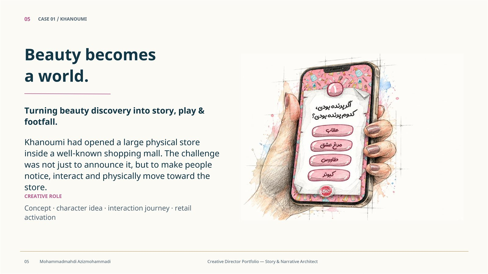

۰۱خانومی
زیبایی، قصه و بازی میشود.
قرار نبود فقط بگوییم یک فروشگاه تازه باز شده. نوستراژاموس را آوردیم وسط راهرو، فال زیبایی ساختیم و کنجکاوی رهگذر را قدمبهقدم تا داخل فروشگاه بردیم؛ آخرش هم یک چمدان صورتی منتظرش بود.
برو داخل جهان ۰۱ ←
←